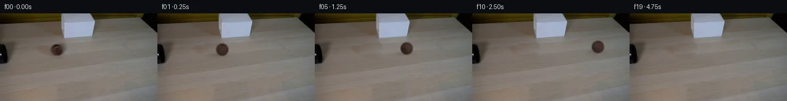
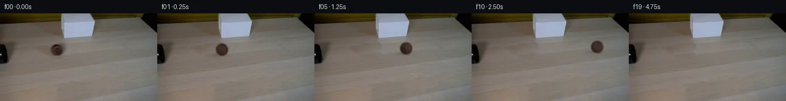
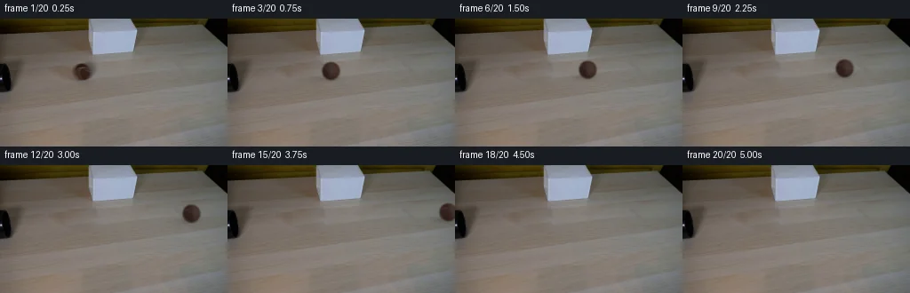
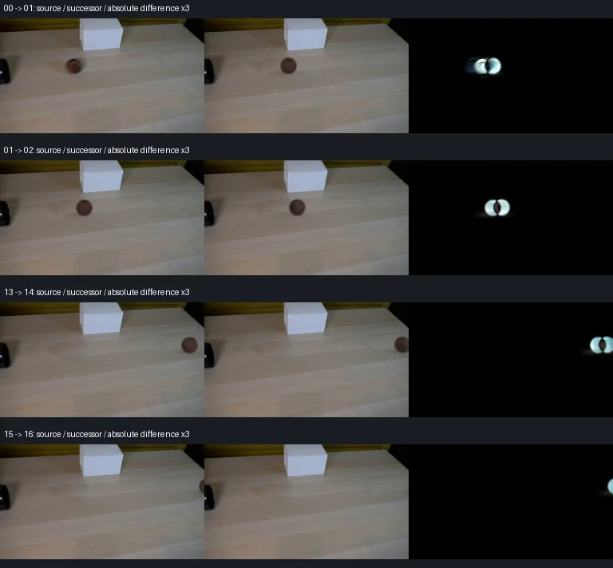

V0 · 初版
2026-11-05T16:22:22.936617+00:00 · RGB b524ca12ba22
![]()
Observable Generation Trace
把最终像素视频、Harness 冻结的每轮候选、真实工具事件和 Agent 自述放在同一页。可观测证据与模型自述分开标记，避免把“模型说它检查过”误当成真实工具调用。
![首帧]()
Static locked-off single-shot with fixed frame throughout filmed with constant framerate in real-time. The scene shows a realistic scientific demonstration. The scene only contains the described setup and actions. A small white lampshade is on a light wooden table and a black tube points from the left side to the right side. The brown tennis ball rolls from the left straight out of the black tube over the entire table.
首帧显示在左侧播放器初始画面。Track 权限、隔离和 tensor 一致性来自 run manifest，而不是 METHOD.md。
默认勾选初版和最终版；可选其他版本一起同步播放。仅检查图更新的连续重复快照已合并，回退旧视频仍保留为一次修订。
Observable events
来源：events.jsonl + run manifest
此 Track 禁止读取输出图片。逐轮预览由外部 Harness 自动冻结，只用于事后审计，生成 Agent 当时看不到这些页面。
Frozen candidates
每张图来自该 round 的真实 00 / 01 / 05 / 10 / 19 帧

pixels e6db10eb7bae40ec · code a4ced0aba4f2e144
--- previous/generate.py
+++ current/generate.py
@@ -0,0 +1,199 @@
+"""Source-only, local pixel synthesis of a rolling ball on a fixed tabletop."""
+from pathlib import Path
+import json
+import numpy as np
+from PIL import Image, ImageDraw
+from scipy.ndimage import gaussian_filter, map_coordinates
+from scipy.sparse import lil_matrix
+from scipy.sparse.linalg import spsolve
+import artifact_io
+
+ROOT = Path(__file__).resolve().parent
+SOURCE = np.array(Image.open(ROOT / 'first_frame.png').convert('RGB'))
+H, W = SOURCE.shape[:2]
+CY, CX, RADIUS = 59.5, 94.0, 10.0
+SPEED, SLOPE = 44.0, -0.045
+Y, X = np.mgrid[:H, :W]
+
+
+def restore_table():
+ """Poisson blend a nearby grain patch into the vacated ball/shadow region."""
+ # The donor is solely another portion of this same tabletop.
+ region = ((X - 90.0) / 21.0) ** 2 + ((Y - 60.0) / 15.0) ** 2 < 1
+ donor = map_coordinates(SOURCE.astype(float),
+ np.array([np.broadcast_to(Y[..., None] - 1.5, (H, W, 3)),
+ np.broadcast_to(X[..., None] + 43.0, (H, W, 3)),
+ np.broadcast_to(np.arange(3), (H, W, 3))]),
+ order=1, mode='nearest')
+ locations = np.argwhere(region)
+ lookup = np.full((H, W), -1, dtype=int)
+ lookup[region] = np.arange(len(locations))
+ laplacian = lil_matrix((len(locations), len(locations)), dtype=float)
+ rhs = np.zeros((len(locations), 3))
+ for i, (y, x) in enumerate(locations):
+ laplacian[i, i] = 4
+ for dy, dx in [(0, 1), (0, -1), (1, 0), (-1, 0)]:
+ yy, xx = y + dy, x + dx
+ rhs[i] += donor[y, x] - donor[yy, xx]
+ if region[yy, xx]:
+ laplacian[i, lookup[yy, xx]] = -1
+ else:
+ rhs[i] += SOURCE[yy, xx]
+ recovered = spsolve(laplacian.tocsr(), rhs)
+ clean = SOURCE.astype(float).copy()
+ clean[region] = np.clip(recovered, 0, 255)
+ return clean, region
+
+
+BACKGROUND, RESTORE_MASK = restore_table()
+# Derive a front hemisphere albedo from the actual ball appearance. Back-side
+# texture is a reflected continuation of this observed face, not a learned model.
+tex_size = 96
+TY, TX = np.mgrid[:tex_size, :tex_size]
+TX = (TX + .5) / tex_size * 2 - 1
+TY = (TY + .5) / tex_size * 2 - 1
+TZ = np.sqrt(np.clip(1 - TX * TX - TY * TY, 0, 1))
+LIGHT = np.array([.45, -.55, .705])
+LIGHT /= np.linalg.norm(LIGHT)
+
+
+def shade(nx, ny, nz):
+ return .68 + .32 * np.maximum(0, nx * LIGHT[0] + ny * LIGHT[1] + nz * LIGHT[2])
+
+
+observed = np.stack([map_coordinates(SOURCE[..., c].astype(float),
+ [CY + TY * RADIUS, CX + TX * RADIUS], order=1, mode='nearest')
+ for c in range(3)], -1)
+# Only the inner disk is reliable: the source silhouette is motion-softened.
+valid = TX * TX + TY * TY < .77 ** 2
+front_albedo = observed / shade(TX, TY, TZ)[..., None]
+mean_albedo = np.median(front_albedo[valid], axis=0)
+# Fill edge albedo from nearest reliable interior point to avoid carrying wood.
+length = np.sqrt(TX * TX + TY * TY)
+q = np.minimum(1, .77 / np.maximum(length, .001))
+front_albedo = np.stack([map_coordinates(front_albedo[..., c],
+ [(TY * q + 1) * tex_size / 2 - .5,
+ (TX * q + 1) * tex_size / 2 - .5],
+ order=1, mode='nearest') for c in range(3)], -1)
+front_albedo = gaussian_filter(front_albedo, sigma=(.6, .6, 0))
+# Keep small measured color variation, but suppress the source's directional
+# lighting imprint so the illumination stays fixed as the texture rolls.
+low = gaussian_filter(front_albedo, sigma=(8, 8, 0))
+front_albedo = np.clip(mean_albedo + .45 * (low - mean_albedo)
+ + .8 * (front_albedo - low), 12, 135)
+
+
+def draw_at(t, supersample=3):
+ """Render a small local sphere patch, rolling texture and attached shadow."""
… diff truncated; 112 more lines …
pixels be4d80d63a5b3e88 · code dfccdf7e2bc1aeaa
--- previous/generate.py
+++ current/generate.py
@@ -101,6 +101,7 @@
yy = (yy + .5) / supersample - .5
bg = np.stack([map_coordinates(BACKGROUND[..., c], [yy, xx],
order=1, mode='nearest') for c in range(3)], -1)
+ original_bg = bg.copy()
# A broad faint shadow to the lower left plus a narrow contact shadow.
broad = .16 * np.exp(-.5 * (((xx - (cx - 4.0)) / 9.0) ** 2
+ ((yy - (cy + radius - 1.4)) / 2.4) ** 2))
@@ -132,10 +133,12 @@
a = gaussian_filter(alpha, .72 * supersample)
premult = gaussian_filter(ball_color * alpha[..., None],
(.72 * supersample, .72 * supersample, 0))
- patch = bg * (1 - a[..., None]) + premult
+ # Downsample only the compositing difference, preserving untouched source
+ # grain exactly instead of repeatedly filtering the stationary table.
+ patch = bg * (1 - a[..., None]) + premult - original_bg
patch = patch.reshape(y1-y0, supersample, x1-x0, supersample, 3).mean((1, 3))
out = BACKGROUND.copy()
- out[y0:y1, x0:x1] = patch
+ out[y0:y1, x0:x1] += patch
return out
pixels be4d80d63a5b3e88 · code 47336dbe9899cf57
--- previous/generate.py
+++ current/generate.py
@@ -1,6 +1,8 @@
"""Source-only, local pixel synthesis of a rolling ball on a fixed tabletop."""
from pathlib import Path
+import base64
import json
+import re
import numpy as np
from PIL import Image, ImageDraw
from scipy.ndimage import gaussian_filter, map_coordinates
@@ -170,7 +172,9 @@
assert packed.shape == (144, 256, 20) and packed.dtype == np.uint32
assert np.array_equal(frames[0], SOURCE)
for i in range(20):
- disk_frame = np.array(Image.open(ROOT / 'frames' / f'{i:02d}.png').convert('RGB'))
+ disk_image = Image.open(ROOT / 'frames' / f'{i:02d}.png')
+ assert disk_image.mode == 'RGB' and disk_image.size == (256, 144)
+ disk_frame = np.array(disk_image)
p = disk_frame.astype(np.uint32)
encoded = p[..., 0] << 16 | p[..., 1] << 8 | p[..., 2]
assert np.array_equal(encoded, packed[..., i]), i
@@ -192,10 +196,40 @@
'measured_dark_centroid':[x,y], 'dark_ball_pixels':int(occupied.sum()),
'changed_pixels_from_previous':int(np.any(frame!=frames[i-1],axis=-1).sum()) if i else 0,
'mean_abs_frame_delta':float(np.abs(frame.astype(float)-frames[i-1]).mean()) if i else 0})
+
+# Verify the standalone player uses precisely the same pixels as the PNGs.
+html = (ROOT / 'index.html').read_text()
+data = json.loads(re.search(r'const DATA=(.*?);\nfunction unpack', html, re.S).group(1))
+unpack = lambda s: np.frombuffer(base64.b64decode(s), dtype='<u4')
+player_frame = unpack(data['first']).copy()
+assert np.array_equal(player_frame.reshape(H,W), packed[...,0])
+for i, encoded in enumerate(data['deltas'], 1):
+ delta, j = unpack(encoded), 0
+ while j < len(delta):
+ start, count = map(int, delta[j:j+2])
+ j += 2
+ player_frame[start:start+count] = delta[j:j+count]
+ j += count
+ assert np.array_equal(player_frame.reshape(H,W), packed[...,i])
+positions = np.array([m['measured_dark_centroid'] for m in metrics[1:14]])
+planned = np.array([m['planned_center'] for m in metrics[1:14]])
+errors = np.linalg.norm(positions - planned, axis=1)
+assert errors.max() < .8 and np.all(np.diff(positions[:,0]) > 10)
+seams = []
+for dy, dx in [(1,0), (0,1)]:
+ boundary = RESTORE_MASK[:-dy or None,:-dx or None] != RESTORE_MASK[dy:,dx:]
+ gradient = np.abs(background_u8[:-dy or None,:-dx or None].astype(float)
+ - background_u8[dy:,dx:])
+ seams.extend(gradient[boundary].mean(-1))
report={'dimensions':[W,H], 'frames':20,'fps':4,'duration_s':5,
'tensor_shape':list(packed.shape),'tensor_dtype':str(packed.dtype),
'all_pngs_match_tensor':True,'frame_00_matches_source':True,
'static_region_exact':True,'ending_static':True,
+ 'player_decoded_matches_tensor':True,'png_modes_all_rgb':True,
+ 'ball_centroid_error_max_px':float(errors.max()),
+ 'ball_centroid_error_mean_px':float(errors.mean()),
+ 'inpaint_seam_mean_gradient':float(np.mean(seams)),
+ 'inpaint_seam_p95_gradient':float(np.percentile(seams,95)),
'ball_albedo_median':mean_albedo.tolist(),'restored_pixel_count':int(RESTORE_MASK.sum()),
'metrics':metrics}
(ROOT / 'verification.json').write_text(json.dumps(report,indent=2)+'\n')Final visual checks
Harness 保存的最终产物


Agent claims
以下文字由生成 Agent 撰写，不等同于工具证据
The supplied first frame was seen in the user attachment. Later images will be inspected only through local Python and numeric checks. The source is a 256 × 144 RGB image. The camera looks down onto a light, gray-brown wooden tabletop; the top rear edge slopes slightly upward to the right. The black tube is clipped by the left border, occupies approximately x=0–14 and y=51–82, and points right. The small white lampshade has a rectangular visible silhouette approximately x=99–155, y=0–41. Both remain fixed.
The brown ball is already out of the tube in the first frame, centered approximately (94,60), with radius about 10 pixels. Numerical source sampling finds the darkest brown pixels near (92,64), RGB (51,28,20), with softer brown pixels around the left silhouette. Its footprint and motion softness extend approximately x=80–106, y=48–72; a weak shadow extends farther left. The visible first frame therefore starts after the launch. The continuation should roll the existing ball right across the remaining tabletop. It must not introduce another ball or repeat the launch.
Use a straight projected track, x=94+44t and y=59.5−0.045(x−94), with t in seconds. This follows the tube direction and the tabletop's slight perspective slope. Radius stays approximately 10 pixels because the track is lateral across the tabletop. The ball rolls without bouncing, with texture rotating about the transverse axis by traveled distance / radius. Lighting and a soft contact shadow stay consistent with the source. Once the ball leaves the right image edge, the locked scene remains still. Source frame 00 is preserved exactly, including its original blur.
| Frame | Time (s) | Ball center x | Ball center y | Planned event |
|---|---|---|---|---|
| 00 | 0.00 | 94 | 59.50 | Exact supplied image; ball already rolling |
| 01 | 0.25 | 105 | 59.01 | Roll right; restore vacated wood |
| 02 | 0.50 | 116 | 58.51 | Continuous roll |
| 03 | 0.75 | 127 | 58.02 | Continuous roll beneath lampshade foreground |
| 04 | 1.00 | 138 | 57.52 | Continuous roll; no contact with lampshade |
| 05 | 1.25 | 149 | 57.03 | Continuous roll |
| 06 | 1.50 | 160 | 56.53 | Pass beyond lampshade's right extent |
| 07 | 1.75 | 171 | 56.04 | Continuous roll |
| 08 | 2.00 | 182 | 55.54 | Continuous roll |
| 09 | 2.25 | 193 | 55.05 | Continuous roll |
| 10 | 2.50 | 204 | 54.55 | Continuous roll |
| 11 | 2.75 | 215 | 54.06 | Continuous roll |
| 12 | 3.00 | 226 | 53.56 | Continuous roll |
| 13 | 3.25 | 237 | 53.07 | Approach right edge |
| 14 | 3.50 | 248 | 52.57 | Ball begins crossing right image edge |
| 15 | 3.75 | 259 | 52.08 | Ball mostly outside frame |
| 16 | 4.00 | 270 | 51.58 | Ball and shadow finish leaving image |
| 17 | 4.25 | 281 | 51.09 | Empty tabletop remains fixed |
| 18 | 4.50 | 292 | 50.59 | Empty tabletop remains fixed |
| 19 | 4.75 | 303 | 50.10 | Empty tabletop remains fixed |
Generation will use only the source pixels and local Python: grain-aware source patch reconstruction of the hidden tabletop, source-derived ball color/texture, analytic sphere projection and rolling, compositing, and soft shadows. Save all mandated artifacts and verify each saved PNG against the packed uint32 tensor. Produce both requested diagnostic images without viewing them.
This is a source-only local Python pixel continuation, using NumPy, Pillow, and SciPy. The initial frame was available visually in the user attachment. No generated image was opened in an image Read/View tool. Generated results were inspected with local code and numerical measurements only. No network, external reference, model, rendering engine, or subagent was used.
The original 256 × 144 RGB source is copied exactly into frame 00. For subsequent frames, the original ball and its soft shadow are removed from a fixed elliptical region containing 977 pixels. Wood grain comes from a nearby unobstructed area of the same source image, translated 43 pixels horizontally and −1.5 pixels vertically. A discrete Poisson solve blends the donor gradients with the original boundary colors. The resulting tabletop is reused unchanged throughout the continuation. The tube, lampshade, and all source pixels outside the moving-object and restoration regions remain fixed.
A local, antialiased sphere of radius 10 pixels replaces the moving ball. Its brown albedo and texture are estimated from the inner portion of the observed source ball, with approximate analytic illumination removed. The unobserved hemisphere uses a reflected continuation of this observed texture. This is an approximation of the hidden surface. Small analytic felt variation, fixed diffuse shading, a soft silhouette, and a faint attached contact shadow complete the object. Sphere texture rotates by traveled distance divided by radius to depict rolling. It is not a 2D rotation of the entire photograph.
The ball follows x = 94 + 44t, y = 59.5 − 0.045(x − 94), without bouncing or an additional launch. The source already depicts the ball outside the tube. Speed, radius, and the slight projected slope are inferred animation choices rather than measured physical calibration. The trajectory passes below the stationary lampshade and leaves the right edge. Exposure integration uses three temporal samples across a 1/40-second shutter interval; spatial rendering uses 3× supersampling and a 0.72-pixel optical blur. Only the rendered difference is downsampled and added to the native tabletop, which preserves its unmoving grain. The last three frames are identical once the ball and shadow have fully left.
Twenty frames are sampled at t = 0, 0.25, …, 4.75 seconds and displayed at 4 fps, for five seconds. artifact_io.py packs RGB into uint32 0xRRGGBB values, saves the tensor as pixels.npz with shape (144, 256, 20), writes frames/00.png through frames/19.png, produces inspection.png, and embeds the same pixels into the standalone index.html player. generate.py also creates transition_check.png, showing four transition pairs and amplified absolute differences.
The first generation exposed an unintended filtering of stationary tabletop pixels within the supersampled local rectangle. The compositor was revised to downsample only the object/shadow difference. The final generation then passed the stationary-region equality assertion.
All 20 PNGs have RGB mode and 256 × 144 dimensions and match their tensor slices exactly. Frame 00 equals the source pixel for pixel. Decoding the player's initial frame and all 19 delta packets reproduces the tensor exactly. Outside the table strip covering restoration and motion, all frames equal the original source. The final three frames are identical.
For fully visible generated balls, the darkness-weighted centroid stays within 0.658 pixels of the planned center (mean error 0.441 pixels); consecutive measured horizontal movements exceed 10 pixels, consistent with the intended 11-pixel step. The ball is partly clipped in frames 14–15 and has no dark sphere pixels in frames 16–19. The restored patch's boundary has a mean absolute RGB gradient of 2.03/255 and a 95th-percentile gradient of 4.35/255. These are numeric checks of continuity, geometry, and consistency; no visual review of the generated frames is claimed.
Run python generate.py in this workspace to regenerate the animation and numerical report. Detailed measurements are saved in verification.json.